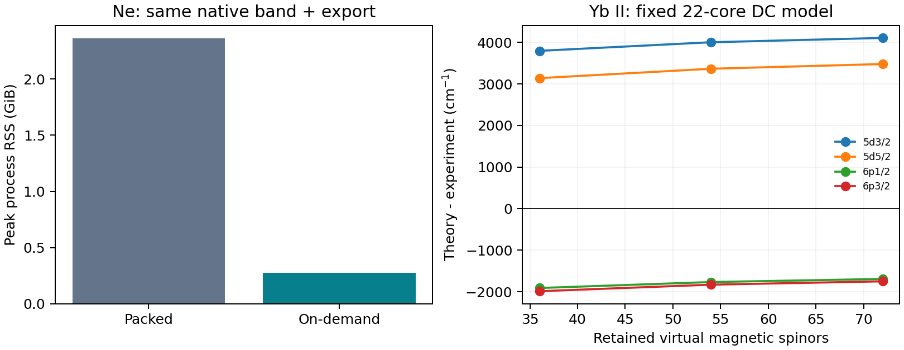

2026-10-09 · 高性能续篇 · 原生算符、导出文件与 CC 张量容量分别验收
新增按需原生 Dirac–Coulomb 积分、闭壳层球对称的一体收缩复用、有界径向电子对势缓存和分块导出。完整 Yb VN 正能电子表示中，低于 5 Ha、ℓ≤3 的全部束缚及伪连续虚态均保留：68 核电子、1894 虚磁轨道、414 径向虚轨道、总计 1962 磁轨道。原生算符构建完成，未生成四指标磁轨道积分数组。
原来完整 packed ERI 需要约 29.6 TB；现在原生两张一体矩阵占 117.48 MiB，ERI 驻留数组为零。完整 Python 进程峰值为 1.227 GiB，构建耗时 98.23 s。缓存、源轨道、快照及解释器均计入进程峰值；一体矩阵容量不冒充整机内存需求。
完整原生算符已构建；整个能窗的 CC 振幅方程尚未求解。 当前 EXP-T 后端仍采用 C1 张量和驻留 packed ERI。完整空间有约 4,083,833,330 个独立核 SD 坐标；现有保守工作估算远超 32 GiB 上限，完整导出及求解均在创建目录前拒绝。未缩减虚轨道以通过资源门。
g = <pq|V|rs> − <pq|V|sr> 仍由共享 Grant 角代数、B-spline 径向核和不可变快照计算；只应用精确的总 M / 奇偶性零项。冻结核常数、h_eff = h_D + Σ_frozen g、F = h_eff + Σ_correlated g 与参考能量保持共同原点。完整闭核使一体算符在 κ/m 中成为标量，因此每个径向轨道对只需计算一次，再复制完整磁简并块。开放或不完整磁壳层、非标量矩阵必须拒绝；任意复轨道旋转仍使用原来的显式积分类型。
按需导出保持 ATXCC001 原始 signed packed 顺序，每次使用至多 4 MiB 输出块；文件哈希同样按块计算。仍检查完整逻辑文件尺寸及后端张量估算。纯原生构建成功不意味着可以写出 29.6 TB 文件或求解全部 CC 张量。
第一版完整 Yb 构建达到预声明 300 s 停止条件。20 s 的局部 cProfile 中，16.638 s 在电子对卷积中；小缓存反复创建交换电子对势。修复同时复用球对称径向收缩，并显式将完整能窗的电子对势容量从 1024 改为 16384。实际缓存数组上界约 276.75 MiB；粗预估用的阶数 7 与保存 Yb 工作区实际阶数 9 的差异已在契约复核中说明。物理空间、积分公式和验收门保持。失败运行、局部剖析和初版源码均保留；未从超时推断精确加速倍数。
Ne 的同一 ns=40、完整 1 Ha 以下 s/p/d 能窗包含 10 核电子、144 虚磁轨道。使用独立 Python 进程按 packed / on-demand / on-demand / packed 顺序完成两组交错配对。四个二电子文件均与此前封存输入逐字节 SHA 相同；最大 Fock 差仅 1.776e-15 Ha，负载门通过。
| 表示 | 原生构建＋完整导出平均耗时 | 平均进程峰值 RSS |
|---|---|---|
| packed | 24.18 s | 2.360 GiB |
| on-demand | 22.57 s | 0.278 GiB |
收益主要是原生进程峰值下降约 88.2%。本表包含参考、完整能窗与积分导出，尚不包含 CC 迭代；不能将构建变快直接称为整个谱学任务等比例加速。Numba 磁盘缓存可能已温热；两组配对限定了本次测量范围。
另行实际运行按需输入的 Ne SD：能量 -128.7018510898964 Ha，与封存值相差 0.000e+00 Ha，方程残差界 1.379e-11 Ha。含 CC 的记录总过程为 124.33 s；它是单次实算时间，不作为受控整体加速比。此时原生父进程峰值为 0.346 GiB，EXP-T 自报最大分配内存为 4.281 GiB；后者不是 OS 测量的子进程 RSS，两者不能相加冒充总峰值。

固定原始 Fermi 核、V68 轨道、ns=123、22 个相关核电子（5s²5p⁶4f¹⁴），其余核进入冻结常数与正规序。虚池依次为各 s/p/d κ 的最低 2 / 3 / 4 个 VN 正交补本征态，对应 36 / 54 / 72 个虚磁轨道；这些池当前均为负束缚能根，并非完整 0–5 Ha 连续能窗。每个模型用自身共同 Hamiltonian 的 6s 基态作零点，价模型保留相同完整 18 个磁态。没有并入旧 Σ、Breit、QED 或反冲，也未拟合实验。
谱位和增量单位为 cm⁻¹，态按实际 n/κ/m/J/奇偶性匹配。实验值沿用已封存的 NIST Yb II handbook 能级子集；其打印小数位不是实验不确定度，也不声称是最新同位素分辨数据。
| 虚磁轨道 | 5d₃/₂ | 5d₅/₂ | 6p₁/₂ | 6p₃/₂ | 最大实验偏差 |
|---|---|---|---|---|---|
| 36 | 26759.311 | 27473.895 | 25149.910 | 28402.893 | 16.543% |
| 54 | 26966.161 | 27699.977 | 25293.405 | 28560.932 | 17.444% |
| 72 | 27069.759 | 27813.176 | 25367.672 | 28641.290 | 17.896% |
| 实验 | 22960.80 | 24332.69 | 27061.82 | 30392.23 | — |
| 扩池 | Δ5d₃/₂ | Δ5d₅/₂ | Δ6p₁/₂ | Δ6p₃/₂ |
|---|---|---|---|---|
| 36 → 54 | +206.849 | +226.082 | +143.495 | +158.039 |
| 54 → 72 | +103.598 | +113.198 | +74.268 | +80.358 |
最新 54→72 增量仍为约 74–113 cm⁻¹，未过 1 cm⁻¹ 空间门。P 态向实验移动，D 态偏差扩大；72 虚轨道的最大实验偏差为 17.896%，1% 门仍失败。因此这些结果支持“当前尾部未收敛”，不支持“继续加束缚虚轨道就能统一修复所有谱线”。须分别检查正能虚态、高分波、径向表示及不同相关模型的响应，不能把有限池增量直接外推为全部遗漏误差。
每次闭核与价态原始振幅方程均收敛；72 虚轨道方程残差界 7.481e-13 Ha。36 轨道在最终源码中重算后，保存的全部绝对能级最大差为零；54 轨道初版/最终表示导出的 ERI SHA 相同，最大 Fock 差 4.263e-14 Ha。完整有符号有效矩阵、各态总能量与共同模型增量分别保存，避免拼接上下态。
78 项相关测试通过，包含真实 Be FS-CCSDT / 完整 CI、非对角复旋转、streamed 有符号有效矩阵、冻结核、完整磁空间、缓存容量 1 / 16384、完整能窗及资源拒绝。后端版本和电子张量公式保持此前经审计的 EXP-T 构建。
下一阶段需要把角动量约化或严格对称分块推进到积分排序、张量收缩与振幅存储，使完整核—价正能尾部能够参与求解，再分别收敛高分波/径向空间和三激发。当前原生 on-demand 不是完整角约化 CC 后端，能量结果也不认证物理共振极点。